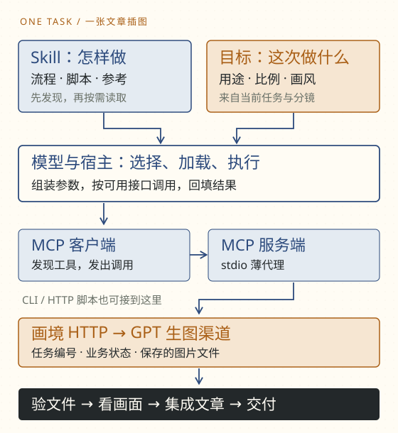
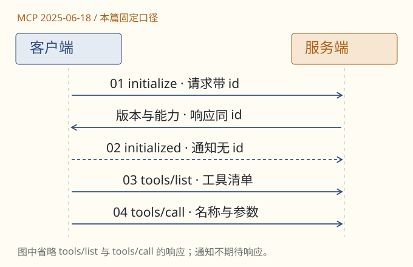

VOL.24Skill × MCP · 一件事的完整执行链
WORKFLOW & INTERFACE / 流程与接口
把流程接上工具
dek / 摘要
昨天，Linger 把 155 条命令收进一个 CLI。今天换一张工作台：给这篇文章生成一张插图。Skill 规定怎么做，MCP 说明怎么接；模型与宿主把两者用起来，最后还要有人打开那张图，判断它够不够交付。

本片提要
装了技能，接了工具，为什么一次任务仍然可能做不完？
这篇的起点在昨天的 Linger 手记第六章。那台机器把许多连接器收进 teamhub，上期取证记下了 56 条自身命令与 99 条连接器命令。我最想接着问的是：如果命令行也能把事做完，Skill 和 MCP 的价值究竟落在哪儿？
刚好，我的画境生图项目同时留着两种入口：一个 Skill 附带的 huajing.mjs 脚本直接调本机 HTTP；一个 MCP 服务把同一套 HTTP 接口装成模型能发现的工具。把它们并排看，比单独解释两个名词更清楚。
本篇沿同一张图走五站：选路线、读流程、查工具、等任务、验文件。VOL.07 已经拆过技能包，VOL.15 已经拆过工具接入；这次把两端接成一次可以交付的工作。
标本：本机 ai-image-studio 的 src/mcp-server.js、src/server.js 与 clawhub-skill/huajing-image-gen/，核对于 2026-11-24。报文互动固定采用 MCP 2025-06-18 口径；画境任务状态与等待限额另由本服务定义。五张插画经 GPT 渠道生成；互动内的任务和故障为确定性模型，PNG 文件检查实际在浏览器执行。
THREE ROUTES / 三种入口
同一张图，三种入口
目标只有一个：生成一张适合文章的横向插图。路线可以不同，交付标准仍然得有人说清楚。
01.1 · 先把三种东西摆开
Skill 是一个装有做法的目录。SKILL.md 写触发描述、步骤与注意事项，旁边可以放脚本、参考文件、模板和素材。它把“这类事通常怎么做”从临时聊天里提出来，变成下次还能找到的材料。
MCP 是宿主与服务交换能力和上下文的协议。宿主里的客户端询问服务有哪些工具、每个工具接受什么参数，然后发出调用。MCP 也有资源与提示模板等能力；本文只走画境实际提供的工具这条线。
CLI 是另一种调用入口。在终端里运行程序，把参数交给它，读取标准输出和退出码。它可以由人调用，也可以由 Agent 调用。Linger 的选择说明：把工具整理成一套清楚的命令行，同样是认真做接入的办法。
| 路线 | 做法从哪来 | 怎么接到服务 | 需要维护什么 |
|---|---|---|---|
| 普通提示 + CLI | 当前请求与命令帮助 | 运行命令，脚本调 HTTP | 提示、命令契约与运行环境 |
| Skill + HTTP 脚本 | 技能正文与参考材料 | 附带脚本直接调 HTTP | 规程、脚本与业务接口 |
| Skill + MCP | 技能正文与参考材料 | 宿主客户端调用 MCP 工具 | 规程、服务端与工具 schema |
现成的画境 Skill 脚本只有 239 行，使用 Node 内置 fetch，直接请求 /api/generations。MCP 服务则是 stdio 薄代理，再把请求交给同一个 HTTP 服务。这是两条真实存在的路径；Skill 并没有等待 MCP 才获得执行能力。
- 路线
- 进度
- 本步负责者
- 结果
确定性推演：三条固定六步路线，均可完成；不运行真实命令。看最后一步——每条路都需要交付验收。切换路线从第零步开始，重来可复放。
PROGRESSIVE LOADING / 按需读取
技能先被找到，再被读到
磁盘上有一个技能目录，和这轮任务实际读过它的正文，是两份不同的证据。
02.1 · 描述是发现入口
Agent Skills 规范把加载分成三段：发现阶段读取 name 与 description；相关时激活，读取整份 SKILL.md；执行时再按需取脚本、参考与素材。规范建议正文控制在 500 行以内。这是写作者控制上下文成本的建议，并不保证所有宿主都用同一种触发机制。
画境技能的真实描述写得很具体：生成图片、润色提示词、查找旧图，并交代本机服务与 Node 的前提。它给模型的是判断相关性的材料。技能目录被安装后，如果本轮只看到一个模糊名字，或者正文根本没有进入上下文，就不能期待规程自动生效。
---
name: article-illustration
description: 为互动技术文章生成和检查章节配图；用于确定用途、
延续系列画风、选择画境渠道、查询任务并保存已验收的图片。
---
## 流程
1. 先读本篇分镜与上一期的配图。
2. 指定已核对的 GPT 渠道、比例与张数。
3. 提交后保存编号，等待时查询已有任务。
4. 打开图片，核验格式、尺寸、构图与文字。
5. 放进文章 assets，检查页面引用与移动端显示。
## 按需材料
- research/visual-brief.md：本篇五张图的分镜
- verify/assets.py：格式、尺寸与文件摘要检查上面是本篇讲解用的技能片段，未安装到用户技能目录。画境原有技能与脚本另有真实路径。把引用文件列出来，是让执行者知道去哪儿取材料；列出来本身不会让脚本自动运行。
02.2 · 流程规则也有执行者
“必须检查成图”可以写进技能，但硬性验收仍应由实际程序和页面检查承担。模型可能漏读一条要求，工具可能返回一个只含路径的结果，页面也可能引用错文件。把检查写成可运行的步骤，比只在正文里写一句“注意质量”更有用。
- 当前层
- 已读字符
- 参考材料
- 脚本执行
确定性模型：内置三份短文档，字符数实际计算，含换行；不换算 token，也不预测真实模型触发概率。重复读同一份参考不会重复计入。读正文后脚本仍未执行，重来清空全部状态。
DISCOVERY & CONTRACT / 工具契约
工具先报家门，再接受调用
模型需要清楚的名字与参数；宿主需要可连接的服务；服务需要一份能够拒绝错误输入的契约。
03.1 · 先握手，再列清单
按本篇固定采用的 MCP 2025-06-18 生命周期，客户端先发 initialize，交换协议版本与能力；服务器响应后，客户端发 notifications/initialized。通知没有请求编号，不期待响应。准备好以后，再用 tools/list 找到可用工具。
版本协商也有边界：服务器支持请求版本时回同版；否则回它支持的版本。客户端若不支持这个返回版本，应断开。接上一个进程，并不等于双方已经能用同一套规则交谈。
本篇在本机实际跑过一次 initialize → initialized 通知 → tools/list：协商版本为 2025-06-18，服务标识 ai-image-studio / 0.1.0，清单包含 13 个工具。这里只发现工具，未调用生图；生成图片的真实 API 记录另放在文末。

03.2 · 把当前 schema 当事实源
画境这里有两个需要记住的名字：generate_image 和 get_generation。查询接受 {id:string}。猜成 get_job，或者把 id 写成另一个参数名，流程叙述再正确也调用不到对应工具。
| 字段 | 此版本画境的合同 | 在哪检查 |
|---|---|---|
prompt | 必填字符串，1–12,000 字符 | MCP 工具 schema |
count | 整数 1–4；省略时后端取 1 | MCP 工具 schema |
wait | 默认 true；false 时先返回任务编号 | MCP 工具逻辑 |
waitSeconds | 5–600 秒，默认 240 秒 | MCP 工具 schema 与等待逻辑 |
size | auto 或宽高 256–2048、均为 64 倍数，总像素 ≤ 3,145,728 | 本机 HTTP 业务服务；MCP schema 只声明 string |
这些数来自画境当前实现，不能搬成 MCP 或所有 GPT 图像模型的通用限制。1536x1024 在这里合法，1619x972 则过不了本机服务的倍数检查。规则变了，应更新工具与脚本共同依赖的事实源。
- 会话阶段
- 错误归属
- 发出调用
确定性报文夹具：按 2025-06-18 口径走 initialize → initialized 通知 → tools/list；schema 只节选三个真实字段。本小样宿主会在发请求前拦错误参数，并非所有宿主都如此。协议 error 与工具 result.isError 分开展示，重来复位。
这篇的图片实际走用户指定的画境 HTTP API 渠道；报文台用于解释同一服务的 MCP 入口。两条路径交到同一个业务服务，不把它们写成同一种传输。
ONE TASK ID / 同一个编号
沿同一个编号等一张图
等待超时，是观察者的一次结果。任务是否完成，要向保存它状态的服务查询。
04.1 · 受理、终态与交付，分三次回答
画境把一次生图提交持久化为 queued 后，HTTP 返回 202。worker 接走它，状态进入 running；图片保存成功以后写 completed；执行失败则写 failed，另有 cancelled 终态。MCP 的 wait:false 会先返回这些任务的编号，提示调用者用 get_generation 查询。
// 依照源码节选的讲解示例，编号不是本次真实任务
generate_image({
prompt: "纸面工作台，蓝墨线与赭色标记，无文字",
providerId: "已核对的-GPT-渠道-ID",
size: "1536x1024",
count: 1,
wait: false
})
// 工具结果的 content[0].text 解析后，节选：
{"submitted":["gen-demo-001"],
"generations":[{"id":"gen-demo-001","status":"queued"}],
"hint":"用 get_generation 查询进度"}
get_generation({id:"gen-demo-001"})
// 返回 {generation:{id,status,images:[{file,url,mime}],...}}这里的 queued、任务编号、图片路径与 get_generation 都属于画境的业务合同。MCP 提供工具调用的外壳，没有替每个服务统一命名它的生图状态。
04.2 · 别让一次等待变成第二次提交
这个 MCP 包装器默认等 240 秒，最多 600 秒。预算到期会返回 timedOut 并提示“仍在生成中，稍后用 get_generation 查询”。这句话应改变下一步动作：保存已有编号，查询原任务。重新调用生成接口，创建的是另一件工作，既可能多付费用，也可能得到第二张不同的图。
原有 CLI 也有自己的等待预算，默认 300 秒。终端退出码描述脚本这次如何结束，不能单凭超时就断言上游没有产生结果。结果不确定时，先找已知任务和回执，再决定是否需要另一次生成。
- 任务编号
- 服务端状态
- 客户端状态
- 提交 / 查询
- /
确定性任务模型：按钮手动推进，无外部计时或真实生图。依次提交、推进、超时、再推进、查询；服务完成时客户端仍可能停在超时观察上。每次查询保留同一编号与提交数，重来清空任务。
EVIDENCE & DELIVERY / 交付证据
打开文件，才谈交付
工具返回 completed，说明这份服务合同走到了终态。图片是否适合文章，还要检查真正的文件和画面。
05.1 · 文件名是一种声明，解码才是证据
一个叫 illustration.png 的文件，里面可能是错误页面。先读取文件签名，再交给图像解码器检查格式和尺寸，才能知道它是不是一张可用图片。本篇交互把这一步实际放在浏览器里执行：读取 PNG 的 8 字节签名与 IHDR，随后解码本地生成的 PNG，再核对宽高。
文件合法还不够。需要看的东西是否在画面里？图中文字是否准确？五张图是否像同一篇文章？网页引用的是最后采用的版本吗？390px 宽的手机上，主体有没有被裁掉？这些问题不会因为一次工具调用返回成功而自行消失。
| 现象 | 先查什么 | 对应责任 |
|---|---|---|
| 装了 Skill，却没按规程做 | 本轮是否实际读了正文，描述是否匹配任务 | 技能发现、宿主加载与执行流程 |
| 找不到工具 / 调用旧名 | 当前 tools/list 和宿主暴露的工具清单 | 工具注册、暴露与名称匹配 |
| 参数被拒绝 | 当前 schema 与业务校验返回 | 参数组装与接口契约 |
| 服务已连接，但生图失败 | 任务错误、渠道配置与上游响应 | 画境业务服务与模型渠道 |
| 有文件，却打不开或比例不符 | 文件签名、实际尺寸与解码结果 | 素材验收与页面集成 |
- 故障位置
- 文件格式
- 实际尺寸
- 文件验收
前四种故障为固定夹具；文件三场景实际检查签名、IHDR 与浏览器解码。PNG 为本地生成的色块，非模型作品。1536 × 1024 是本小样的固定合同；通过只表示文件检查通过，画面仍需目检。重来使未完成的旧检查失效。
05.2 · 这一篇怎样算做完
正文里的报文与表格对到当前源码；互动按固定路径重放；五张章节插画用已核对的 GPT 渠道生成，再解码、压缩并放到本篇目录。最后检查每个按钮、图片引用、字体和移动端布局。每一层都留下自己的记录，才有依据写“可以交付”。
本篇取证与复跑：源码与官方资料核对 · 五张插画分镜 · 本机 MCP 握手与工具清单记录 · 本篇真实生成记录。
如果只带走五句
WORKBENCH CARD / 工作台速查
- Skill 保存做法、脚本与材料；是否用于本轮任务，要看实际加载与执行。
- MCP 统一发现与调用的接口；CLI 与 HTTP 脚本也可以完成接入。
- 当前工具清单与 schema 是调用依据；文中旧名字和默认值要重新核对。
- 超时后保存任务编号，先查询已有工作；受理、完成与交付分别验。
- 检查文件，再看画面，再看页面；每一步都留下能复核的结果。
昨天，Linger 把许多能力收进一个命令行；今天，我把画境的两条入口放回同一张工作台。它们各自的价值因此变得具体：重复的做法可以写成技能，多种宿主需要共同接口时可以接 MCP，已有清楚的 CLI 时也可以直接用它。
要决定下一步接什么，先看这次工作卡在哪儿。流程散，就整理流程；接口散，就整理接口；结果拿回来了却无法交付，就把验收补上。桌上少一条电缆、多一份规程，都得说清它解决的是哪件事。
资料核对于 2026-11-24：Agent Skills 格式与渐进加载；MCP 2025-06-18 的生命周期、工具规范与宿主／客户端／服务端结构；本机画境源码路径与行号见取证页。Linger 的 155 条命令沿用上期取证，并未在本篇复现其产品。